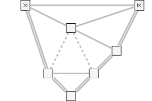

| Safe Haskell | Safe-Inferred |
|---|---|
| Language | GHC2021 |
Common
Description
Common types and functionality that are used throughout the model.
Synopsis
- data Path around between
- pathLen :: Path a b -> Int
- pathHead :: Path a b -> a
- pathSetHead :: Path a b -> a -> Path a b
- mapArounds :: (a -> a') -> Path a b -> Path a' b
- mapAroundsWithIndex :: Int -> (Int -> a -> a') -> Path a b -> Path a' b
- mapBetweens :: (a -> b -> a -> c) -> Path a b -> [c]
- reversePath :: Path a b -> Path a b
- pathArounds :: Path a b -> [a]
- pathBetweens :: Path a b -> [b]
- data StartStop a
- onlyInner :: [StartStop a] -> [a]
- getInner :: StartStop a -> Maybe a
- getInnerE :: StartStop a -> Either String a
- isInner :: StartStop a -> Bool
- isStart :: StartStop a -> Bool
- isStop :: StartStop a -> Bool
- distStartStop :: StartStop (a, b) -> (StartStop a, StartStop b)
- data SplitType
- type UnspreadMiddle tr slc v = (slc, tr, slc) -> Maybe (slc, v)
- type UnspreadLeft tr slc = (tr, slc) -> slc -> [tr]
- type UnspreadRight tr slc = (slc, tr) -> slc -> [tr]
- type Unsplit tr slc v = StartStop slc -> tr -> slc -> tr -> StartStop slc -> SplitType -> [(tr, v)]
- data Eval tr tr' slc slc' v = Eval {
- evalUnspreadMiddle :: !(UnspreadMiddle tr slc v)
- evalUnspreadLeft :: !(UnspreadLeft tr slc)
- evalUnspreadRight :: !(UnspreadRight tr slc)
- evalUnsplit :: !(Unsplit tr slc v)
- evalUnfreeze :: !(StartStop slc -> Maybe tr' -> StartStop slc -> IsLast -> [(tr, v)])
- evalSlice :: !(slc' -> slc)
- type IsLast = Bool
- mapEvalScore :: (v -> w) -> Eval tr tr' slc slc' v -> Eval tr tr' slc slc' w
- productEval :: Eval tr1 tr' slc1 slc' v1 -> Eval tr2 tr' slc2 slc' v2 -> Eval (tr1, tr2) tr' (slc1, slc2) slc' (v1, v2)
- data RightBranchSpread
- evalRightBranchSpread :: Eval RightBranchSpread tr' () slc' ()
- rightBranchSpread :: Eval tr tr' slc slc' w -> Eval (RightBranchSpread, tr) tr' ((), slc) slc' w
- data Merged
- evalSplitBeforeSpread :: Eval Merged tr' () slc' ()
- splitFirst :: Eval tr tr' slc slc' w -> Eval (Merged, tr) tr' ((), slc) slc' w
- data Leftmost s f h where
- LMSingle !(LeftmostSingle s f)
- LMDouble !(LeftmostDouble s f h)
- pattern LMFreezeLeft :: f -> Leftmost s f h
- pattern LMFreezeOnly :: f -> Leftmost s f h
- pattern LMSplitLeft :: s -> Leftmost s f h
- pattern LMSplitOnly :: s -> Leftmost s f h
- pattern LMSplitRight :: s -> Leftmost s f h
- pattern LMSpread :: h -> Leftmost s f h
- data LeftmostSingle s f
- = LMSingleSplit !s
- | LMSingleFreeze !f
- data LeftmostDouble s f h
- = LMDoubleSplitLeft !s
- | LMDoubleFreezeLeft !f
- | LMDoubleSplitRight !s
- | LMDoubleSpread !h
- data Analysis s f h tr slc = Analysis {
- anaDerivation :: [Leftmost s f h]
- anaTop :: Path tr slc
- debugAnalysis :: forall tr slc s f h. (Show tr, Show slc, Show s, Show h) => (s -> tr -> Either String (tr, slc, tr)) -> (f -> tr -> Either String tr) -> (h -> tr -> slc -> tr -> Either String (tr, slc, tr, slc, tr)) -> Analysis s f h tr slc -> IO (Either String ())
- mkLeftmostEval :: UnspreadMiddle tr slc h -> UnspreadLeft tr slc -> UnspreadRight tr slc -> (StartStop slc -> tr -> slc -> tr -> StartStop slc -> [(tr, s)]) -> (StartStop slc -> Maybe tr' -> StartStop slc -> [(tr, f)]) -> (slc' -> slc) -> Eval tr tr' slc slc' (Leftmost s f h)
- newtype PartialDerivation s f h (openTrans :: Nat) (afterRightSplit :: Bool) = PD {}
- data DerivationInfo a b
- data IndexedWriter w i j a
- itell :: Monoid w => w -> IndexedWriter w i j ()
- type DerivationAction s f h n n' afterRight afterRight' = IndexedWriter [Leftmost s f h] (DerivationInfo n afterRight) (DerivationInfo n' afterRight') ()
- buildDerivation :: DerivationAction s f h 1 n 'False snd -> [Leftmost s f h]
- buildPartialDerivation :: forall n n' snd s f h. DerivationAction s f h n n' 'False snd -> [Leftmost s f h]
- split :: forall n s f h. (KnownNat n, 1 <= n) => s -> DerivationAction s f h n (n + 1) 'False 'False
- freeze :: forall n s h f. (KnownNat n, 1 <= n) => f -> DerivationAction s f h n (n - 1) 'False 'False
- splitRight :: 2 <= n => s -> DerivationAction s f h n (n + 1) snd 'True
- spread :: 2 <= n => h -> DerivationAction s f h n (n + 1) snd 'False
- data Derivations a
- = Do !a
- | Or !(Derivations a) !(Derivations a)
- | Then !(Derivations a) !(Derivations a)
- | NoOp
- | Cannot
- mapDerivations :: Semiring r => (a -> r) -> Derivations a -> r
- flattenDerivations :: Ord a => Derivations a -> Set [a]
- flattenDerivationsRed :: Ord a => Derivations a -> [[a]]
- firstDerivation :: Ord a => Derivations a -> Maybe [a]
- traceLevel :: Int
- traceIf :: Int -> [Char] -> Bool -> Bool
- showTex :: Show a => a -> String
- showTexT :: Show a => a -> Text
Paths
Paths encode sequences of alternating objects (such as nodes and edges). They are often used to encode sequences of slices and transitions. Note that dependending on context, both slice-transition-slice and transition-slice-transition orders are used.
data Path around between Source #
A Path is a datastructure that represents a sequence of alternating objects, arounds and betweens, starting and ending with the same type. An example would be a path in a graph, starting and ending with a node with edges in-between.
Instances
| Bifunctor Path Source # | |
| Generic (Path around between) Source # | |
| (Show a, Show b) => Show (Path a b) Source # | |
| (Eq around, Eq between) => Eq (Path around between) Source # | |
| (Ord around, Ord between) => Ord (Path around between) Source # | |
Defined in Common Methods compare :: Path around between -> Path around between -> Ordering # (<) :: Path around between -> Path around between -> Bool # (<=) :: Path around between -> Path around between -> Bool # (>) :: Path around between -> Path around between -> Bool # (>=) :: Path around between -> Path around between -> Bool # max :: Path around between -> Path around between -> Path around between # min :: Path around between -> Path around between -> Path around between # | |
| type Rep (Path around between) Source # | |
Defined in Common type Rep (Path around between) = D1 ('MetaData "Path" "Common" "proto-voice-model-0.1.0.0-JBHr16sELtZFYZTezfJIZj" 'False) (C1 ('MetaCons "Path" 'PrefixI 'False) (S1 ('MetaSel ('Nothing :: Maybe Symbol) 'NoSourceUnpackedness 'SourceStrict 'DecidedStrict) (Rec0 around) :*: (S1 ('MetaSel ('Nothing :: Maybe Symbol) 'NoSourceUnpackedness 'SourceStrict 'DecidedStrict) (Rec0 between) :*: S1 ('MetaSel ('Nothing :: Maybe Symbol) 'NoSourceUnpackedness 'SourceStrict 'DecidedStrict) (Rec0 (Path around between)))) :+: C1 ('MetaCons "PathEnd" 'PrefixI 'False) (S1 ('MetaSel ('Nothing :: Maybe Symbol) 'NoSourceUnpackedness 'SourceStrict 'DecidedStrict) (Rec0 around))) | |
pathSetHead :: Path a b -> a -> Path a b Source #
Replaces the first around in the path.
mapArounds :: (a -> a') -> Path a b -> Path a' b Source #
Maps a function over every around in the path.
mapAroundsWithIndex :: Int -> (Int -> a -> a') -> Path a b -> Path a' b Source #
Maps a function over every around in the path together with its index.
mapBetweens :: (a -> b -> a -> c) -> Path a b -> [c] Source #
Maps a function over every between and its adjacent arounds in the path.
reversePath :: Path a b -> Path a b Source #
Reverses the path.
pathArounds :: Path a b -> [a] Source #
Returns the list of arounds in the path.
pathBetweens :: Path a b -> [b] Source #
Returns the list of betweens in the path).
StartStop
StartStop is a wrapper that augments a type with special values for beginning and end.
A container type that augements the type a
with symbols for beginning (Start, ⋊) and end (Stop, ⋉).
Every other value is wrapped in an Inner constructor.
Instances
onlyInner :: [StartStop a] -> [a] Source #
From a list of StartStops returns only the elements that are not :⋊ or :⋉,
unwrapped to their original type.
Evaluators
Evaluators (Eval) are the main parsing interface for a grammar.
They bundle a number of functions that compute local "completions"
(i.e., parent objects and generative operations)
from child objects.
Parsers use these evaluators to generically parse an input sequence
since all the grammar-specific parsing code is provided by the evaluator.
Evaluators can be transformed and combined using mapEvalScore and productEval respectively.
A flag that indicates where a split has been performed, on the left transition, the right transition, or the only transition
Constructors
| LeftOfTwo | |
| RightOfTwo | |
| SingleOfOne |
type UnspreadMiddle tr slc v = (slc, tr, slc) -> Maybe (slc, v) Source #
An evaluator for unspreads. Takes the two child slices and the middle transition. Returns the parent slice and the spread operation, if possible.
type UnspreadLeft tr slc = (tr, slc) -> slc -> [tr] Source #
An evaluator returning the possible left parent edges of an unspread. The first argument is a pair of left child transition and left child slice. The second argument is the parent slice.
type UnspreadRight tr slc = (slc, tr) -> slc -> [tr] Source #
An evaluator returning the possible right parent edges of an unspread. The first argument is a pair of right child slice and right child transition. The second argument is the parent slice.
type Unsplit tr slc v = StartStop slc -> tr -> slc -> tr -> StartStop slc -> SplitType -> [(tr, v)] Source #
An evaluator for unsplits. Returns possible unsplits of a given pair of transitions.
data Eval tr tr' slc slc' v Source #
A combined evaluator for unsplits, unspreads, and unfreezes. Additionally, contains a function for mapping terminal slices to derivation slices.
Constructors
| Eval | |
Fields
| |
A flag indicating whether an operation is performed on the last transition.
mapEvalScore :: (v -> w) -> Eval tr tr' slc slc' v -> Eval tr tr' slc slc' w Source #
Maps a function over all scores produced by the evaluator.
productEval :: Eval tr1 tr' slc1 slc' v1 -> Eval tr2 tr' slc2 slc' v2 -> Eval (tr1, tr2) tr' (slc1, slc2) slc' (v1, v2) Source #
Combine two evaluators into a product evaluator. Each evaluation function returns the product of the two component evaluators' results.
Special Restricting Evaluators
Some special evaluators that can be combined with grammar-specific evaluators to restrict the possibile derivations.
data RightBranchSpread Source #
A flag that is used to restrict spread operations to right branching.
Constructors
| RBBranches | |
| RBClear |
Instances
evalRightBranchSpread :: Eval RightBranchSpread tr' () slc' () Source #
An evaluator that doesn't parse the input but restricts spread operations to right branching.
Legal combinations will just return a singleton () while illegal combinations return nothing.
Combine this with any evaluator as a product (using productEval or rightBranchSpread)
to make the evaluator right-branching.
rightBranchSpread :: Eval tr tr' slc slc' w -> Eval (RightBranchSpread, tr) tr' ((), slc) slc' w Source #
Restrict any evaluator to right-branching spreads.
A flag for indicating whether a transition is the result of a split or not. This is used for restricting the order of splits and spreads.
evalSplitBeforeSpread :: Eval Merged tr' () slc' () Source #
An evaluator that doesn't parse the input but restricts the order of operations
to always have splits before spreads on the left and right transitions at a spread.
Legal combinations will just return a singleton () while illegal combinations return nothing.
Combine this with any evaluator as a product (using productEval or splitFirst)
to make the evaluator order-restricted.
splitFirst :: Eval tr tr' slc slc' w -> Eval (Merged, tr) tr' ((), slc) slc' w Source #
Restrict any evaluator to split-before-spread order.
Leftmost Derivations
Derivations can be represented as lists of operations in leftmost-first order. In this order, each operation (split, spread, or freeze) is applied to the leftmost non-terminal transition(s).
More specifically, if there is only one open transition left, only two actions are possible, freezing or splitting that transition:
freeze only: split only:
...=[]——⋉ ==[]——⋉
...=[]==⋉ \ /
[]These options are encoded in LeftmostSingle.
If two or more transitions are still open, four actions are possible:
freeze left: split left: split right: spread:
...=[]——[]——[]—... ...=[]——[]——[]—... ...=[]——[]——[]—... ...=[]——[]——[]—...
...=[]==[]——[]—... \ / \ / \ /\ /
[] [] []——[]These options are encoded in LeftmostDouble.
Note that the order of operations is restricted so that after a right split only
only another right split or a spread are allowed.
See below for a way to construct leftmost derivations in a type-safe way,
checking operation order and open transitions at compile time.
Both single and double operations are combined in Leftmost.
All three operation containers are parameterized over the specific operations types for
splits (s), spreads (h for "horizontalization"), freezes (f).
A combined datatype for all leftmost-derivation operations.
Constructors
| LMSingle !(LeftmostSingle s f) | |
| LMDouble !(LeftmostDouble s f h) |
Bundled Patterns
| pattern LMFreezeLeft :: f -> Leftmost s f h | |
| pattern LMFreezeOnly :: f -> Leftmost s f h | |
| pattern LMSplitLeft :: s -> Leftmost s f h | |
| pattern LMSplitOnly :: s -> Leftmost s f h | |
| pattern LMSplitRight :: s -> Leftmost s f h | |
| pattern LMSpread :: h -> Leftmost s f h |
Instances
data LeftmostSingle s f Source #
Generative operations on a single transition (split or freeze).
Constructors
| LMSingleSplit !s | |
| LMSingleFreeze !f |
Instances
data LeftmostDouble s f h Source #
Generative operations on two transitions (split left, freeze left, split right, or spread)
Constructors
| LMDoubleSplitLeft !s | |
| LMDoubleFreezeLeft !f | |
| LMDoubleSplitRight !s | |
| LMDoubleSpread !h |
Instances
data Analysis s f h tr slc Source #
Encodes an analysis of a piece, consisting of a "top" (the starting point of the derivation, i.e., the smallest reduction in the analysis) and a derivation of the piece's surface from the top.
Use this type's FromJSON instance to load an analysis exported by the protovoice annotation tool.
Constructors
| Analysis | |
Instances
| (FromJSON s, FromJSON f, FromJSON h, FromJSON tr, FromJSON slc) => FromJSON (Analysis s f h tr slc) Source # | |
| Generic (Analysis s f h tr slc) Source # | |
| (Show s, Show f, Show h, Show tr, Show slc) => Show (Analysis s f h tr slc) Source # | |
| (Eq s, Eq f, Eq h, Eq tr, Eq slc) => Eq (Analysis s f h tr slc) Source # | |
| (Ord s, Ord f, Ord h, Ord tr, Ord slc) => Ord (Analysis s f h tr slc) Source # | |
Defined in Common Methods compare :: Analysis s f h tr slc -> Analysis s f h tr slc -> Ordering # (<) :: Analysis s f h tr slc -> Analysis s f h tr slc -> Bool # (<=) :: Analysis s f h tr slc -> Analysis s f h tr slc -> Bool # (>) :: Analysis s f h tr slc -> Analysis s f h tr slc -> Bool # (>=) :: Analysis s f h tr slc -> Analysis s f h tr slc -> Bool # max :: Analysis s f h tr slc -> Analysis s f h tr slc -> Analysis s f h tr slc # min :: Analysis s f h tr slc -> Analysis s f h tr slc -> Analysis s f h tr slc # | |
| type Rep (Analysis s f h tr slc) Source # | |
Defined in Common type Rep (Analysis s f h tr slc) = D1 ('MetaData "Analysis" "Common" "proto-voice-model-0.1.0.0-JBHr16sELtZFYZTezfJIZj" 'False) (C1 ('MetaCons "Analysis" 'PrefixI 'True) (S1 ('MetaSel ('Just "anaDerivation") 'NoSourceUnpackedness 'NoSourceStrictness 'DecidedLazy) (Rec0 [Leftmost s f h]) :*: S1 ('MetaSel ('Just "anaTop") 'NoSourceUnpackedness 'NoSourceStrictness 'DecidedLazy) (Rec0 (Path tr slc)))) | |
debugAnalysis :: forall tr slc s f h. (Show tr, Show slc, Show s, Show h) => (s -> tr -> Either String (tr, slc, tr)) -> (f -> tr -> Either String tr) -> (h -> tr -> slc -> tr -> Either String (tr, slc, tr, slc, tr)) -> Analysis s f h tr slc -> IO (Either String ()) Source #
Prints the steps and intermediate configurations of a derivation.
mkLeftmostEval :: UnspreadMiddle tr slc h -> UnspreadLeft tr slc -> UnspreadRight tr slc -> (StartStop slc -> tr -> slc -> tr -> StartStop slc -> [(tr, s)]) -> (StartStop slc -> Maybe tr' -> StartStop slc -> [(tr, f)]) -> (slc' -> slc) -> Eval tr tr' slc slc' (Leftmost s f h) Source #
Create a leftmost evaluator from position-independent evaluation functions
that just return spread, split, and freeze operations
by wrapping those into the appropriate Leftmost constructors.
Monadic Interface for Constructing Derivations
Use these functions to manually build a derivation,
checking leftmost-correctness in the type.
A good way to do this is to start a derivation using buildDerivation or buildPartialDerivation
and follow up with a do block that contains a sequence of split,
freeze, splitRight and spread actions..
deriv :: [Leftmost () () ()] -- using unit for each operation type deriv = buildDerivation $ do -- start with 1 transition split () -- (2 open transitions) splitRight () -- (3 open) spread () -- (4 open) freeze () -- (3 open) split () -- (4 open) freeze () -- (3 open) freeze () -- (2 open) freeze () -- (1 open) freeze () -- (0 open, end of derivation)
The above example results in the following derivation graph:

Since PartialDerivation is an indexed monad
(it's exact type changes between actions),
using do-notation requires you to rebind its syntax to use indexed versions of >>= and >>
using the QualifiedDo extension.
The easiest way to do use the generic operators from Language.Haskell.DoNotation
by using this module as the do qualifier:
import qualified Language.Haskell.DoNotation as Do deriv = buildDerivation $ Do.do -- requires -XQualifiedDo split () ...
newtype PartialDerivation s f h (openTrans :: Nat) (afterRightSplit :: Bool) Source #
A wrapper around leftmost derivations
that tracks information about the derivation state in the type.
Number of open transitions: openTrans.
Whether a right split has been performed at the current point: afterRightSplit.
data DerivationInfo a b Source #
A type-level wrapper for partial derivation info. Encodes the number of open transitions and whether the last operation was a right split.
data IndexedWriter w i j a Source #
An "indexed" version of a writer monad, i.e. one where the monad type between two steps can change. This can be used for tracking the number of open transitions in a derivation on the type level while still providing an monadic interface for constructing a derivation.
Instances
| IxFunctor (IndexedWriter w :: k -> k1 -> Type -> TYPE LiftedRep) Source # | |
Defined in Common Methods imap :: forall a b (j :: k0) (k2 :: k10). (a -> b) -> IndexedWriter w j k2 a -> IndexedWriter w j k2 b # | |
| Monoid w => IxMonad (IndexedWriter w :: k -> k -> Type -> TYPE LiftedRep) Source # | |
Defined in Common Methods ibind :: forall a (j :: k0) (k1 :: k0) b (i :: k0). (a -> IndexedWriter w j k1 b) -> IndexedWriter w i j a -> IndexedWriter w i k1 b # | |
| Monoid w => IxApplicative (IndexedWriter w :: k -> k -> Type -> TYPE LiftedRep) Source # | |
Defined in Common Methods iap :: forall (i :: k0) (j :: k0) a b (k1 :: k0). IndexedWriter w i j (a -> b) -> IndexedWriter w j k1 a -> IndexedWriter w i k1 b # | |
| Monoid w => IxPointed (IndexedWriter w :: k -> k -> Type -> TYPE LiftedRep) Source # | |
Defined in Common Methods ireturn :: forall a (i :: k0). a -> IndexedWriter w i i a # | |
itell :: Monoid w => w -> IndexedWriter w i j () Source #
tell for IndexedWriter.
type DerivationAction s f h n n' afterRight afterRight' = IndexedWriter [Leftmost s f h] (DerivationInfo n afterRight) (DerivationInfo n' afterRight') () Source #
The type of a monadic derivation action that modifies the derivation state (number of open transitions, after right split).
buildDerivation :: DerivationAction s f h 1 n 'False snd -> [Leftmost s f h] Source #
Turn a monadically constructed derivation into a proper left-most derivation. This function assumes the derivation to start with a single transition.
buildPartialDerivation :: forall n n' snd s f h. DerivationAction s f h n n' 'False snd -> [Leftmost s f h] Source #
Turn a monadically constructed partial derivation into a left-most derivation. This function does not restrict the number of transitions in the starting configuration.
split :: forall n s f h. (KnownNat n, 1 <= n) => s -> DerivationAction s f h n (n + 1) 'False 'False Source #
Turn a split operation into a monadic (left or single) split action.
freeze :: forall n s h f. (KnownNat n, 1 <= n) => f -> DerivationAction s f h n (n - 1) 'False 'False Source #
Turn a freeze operation into a monadic (left or single) freeze action.
splitRight :: 2 <= n => s -> DerivationAction s f h n (n + 1) snd 'True Source #
Turn a split operation into a monadic right-split action.
spread :: 2 <= n => h -> DerivationAction s f h n (n + 1) snd 'False Source #
Turn a spread operation into a monadic spread action.
Derivations Semiring
A generic semiring that represents a collection of derivations as prefix trees.
data Derivations a Source #
The derivations semiring. Similar to a free semiring, encodes sequences, alternatives, and neutral values directly. However, semiring equivalences are not idendified by default.
Constructors
| Do !a | a single operation |
| Or !(Derivations a) !(Derivations a) | combines alternative derivations |
| Then !(Derivations a) !(Derivations a) | combines sequential derivations |
| NoOp | the neutral element to |
| Cannot | the neutral element to |
Instances
mapDerivations :: Semiring r => (a -> r) -> Derivations a -> r Source #
Map the Derivations semiring to another semiring.
flattenDerivations :: Ord a => Derivations a -> Set [a] Source #
Flatten the prefix-tree structure of Derivations into a simple set of derivations.
flattenDerivationsRed :: Ord a => Derivations a -> [[a]] Source #
Flatten the prefix-tree structure of Derivations
into a simple list of (potentially redundant) derivations.
firstDerivation :: Ord a => Derivations a -> Maybe [a] Source #
Obtain the first derivation from a Derivations tree.
Utilities
traceLevel :: Int Source #
The global trace level. Only trace messages >= this level are shown.